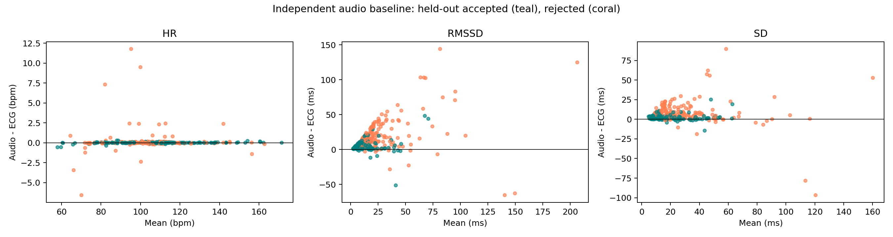
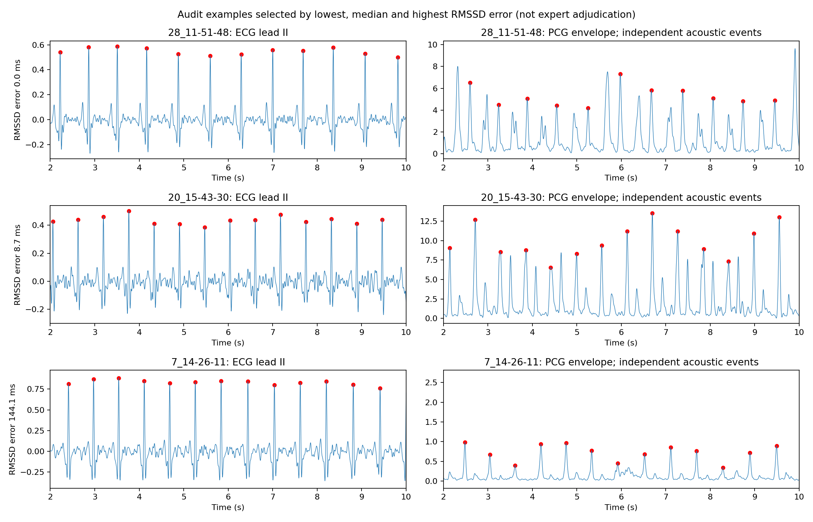

**Empirical manuscript draft — 13 October 2026.** Authors and affiliations must be supplied by the actual investigators. This document reports completed computational analyses, with publication prerequisites stated explicitly. No journal submission or public preregistration has occurred.
**Background:** Recorded heart sounds offer a noninvasive mechanical view of the cardiac cycle. Agreement in average heart rate does not establish agreement in beat-to-beat variability. We investigate whether an audio-only quality model can identify recordings for which ultra-short acoustic variability estimates are less reliable.
**Methods:** We acquired the complete synchronized SensSmartTech 1.0.0 WFDB release: 338 recordings from 32 participants. After independent ECG comparator checks and acoustic feature availability, 316 recordings from 32 participants were eligible. Acoustic cycle events were extracted independently of ECG using envelope autocorrelation and recurrence tracking. A ridge model predicted log absolute RMSSD disagreement from six audio-only features using leave-one-participant-out evaluation. Training-fold thresholds targeted 50% retention. ECG-guided acoustic peaks and mechanical-sensor baselines were analyzed separately. Uncertainty was estimated by participant bootstrap.
**Results:** Independent acoustic HR MAE was 0.28 (0.12 to 0.49) bpm, while RMSSD MAE was 15.33 (11.72 to 19.52) ms. The gate retained 159 eligible records (50.3%), with participant-balanced RMSSD MAE 6.00 ms (95% CI 4.66 to 7.48). The retained-record error was lower; the paired change was -9.36 ms (95% cluster-bootstrap CI -14.32 to -5.32), which does not include zero. A participant-count-matched random-retention control had mean MAE 15.36 ms. ECG-guided acoustic RMSSD MAE was 11.80 (9.87 to 14.13) ms.
**Conclusion:** This benchmark quantifies the error and coverage tradeoff of a simple audio-only abstention strategy. It does not establish general equivalence between acoustic variability and clinical HRV. Automated comparator timing, short duration, event-phase ambiguity and lack of independent replication limit interpretation.
**Keywords:** phonocardiography; acoustic cycle variability; RMSSD; selective prediction; exercise recovery; synchronized biosignals.
Cardiac acoustics capture mechanical events that complement the electrical timing of ECG. The practical research question is whether recorded sound can support useful rhythm measurements and when a sound-derived estimate should be withheld. A system that always outputs a variability value can obscure event-localization failures. Conversely, aggressive rejection can improve retained-record agreement while excluding substantial portions of a population. Both error and coverage therefore belong in the evaluation.
Earlier multimodal comparisons already distinguish average-HR agreement from variability agreement [1]. Delay variability has been investigated [2], and quality-dependent acoustic event localization has prior support [3,4]. ECG-free localization with templates has also been evaluated [5]. Mean-HR comparison on SensSmartTech was recently published [6]. Accordingly, this study does not claim discovery of acoustic HRV, quality assessment, electromechanical delay or subject-wise validation. Its candidate contribution is their narrower combination: held-out prediction of ultra-short RMSSD disagreement during recovery, with abstention, matched random-retention controls and explicit separation of ECG-guided diagnostics.
The motivating identity is simple. If an acoustic event is observed at S_i = R_i + d_i, then the acoustic interval equals the corresponding electrical interval plus d_(i+1) - d_i. Constant delay cancels; variable delay does not. Importantly, observed d_i includes both mechanical timing and measurement error. The identity cannot determine which component caused a discrepancy. Our study evaluates measurement agreement without attributing a causal physiological mechanism.
SensSmartTech provides synchronous ECG, PCG, carotid and brachial PPG, and chest acceleration recordings before exercise and during recovery [7,8]. We downloaded every WFDB header and signal file for version 1.0.0 from PhysioNet's official public AWS mirror. All 2704 files matched the upstream SHA256 manifest. Demographic metadata supplied participant identifiers and before/after activity labels. The cohort contained 96 before-activity and 242 after-activity recordings. Observed durations ranged from 28.501 to 29.997 seconds.
The dataset is openly licensed under CC BY 4.0. Original ethics and consent statements belong to the dataset documentation [7]. This project analyzed released, deidentified records and did not recruit participants. Local institutional requirements for a secondary-data study must be determined by the eventual authors; an exemption has not been fabricated.
Fixed leads I and II were bandpass filtered at 5–25 Hz using a third-order Butterworth filter applied forward and backward, then scaled to unit standard deviation. WFDB XQRS independently detected beats in each lead. Lead II supplied the comparator sequence. Eligibility required a cross-lead event F1 of at least 0.90 at 50 ms tolerance, at least 15 detected beats, and all detected RR intervals between 0.30 and 1.50 seconds. Both cross-lead sequences excluded the first and last 0.5 seconds.
These checks are conservative engineering rules, not diagnostic validation. Cross-lead agreement can miss common detector errors. No normal-beat adjudication, ectopy labeling or manual interval repair was performed. Therefore the comparator is ECG interval variability; SD is not asserted to be validated SDNN. Extraction status and eligibility are retained for every original record. There were 0 extraction failures and 22 records outside the final eligible set. These are distinct counts because eligibility includes comparator and feature checks.
PCG was filtered at 25–150 Hz with a zero-phase third-order Butterworth filter. The absolute Hilbert transform was low-pass filtered at 15 Hz to obtain an envelope. Mean-centered envelope autocorrelation, normalized by available overlap and zero-lag energy, was searched for prominent local maxima over lags of 333–1500 samples. The largest candidate autocorrelation value supplied a cycle period.
Envelope candidates were separated by at least 80 ms and required prominence of 0.15 envelope standard deviations. The tracker started at the largest candidate within two estimated cycles. At each step, candidates within 0.65–1.35 times the estimated period were scored by log envelope height minus eight times squared relative period deviation. The best event was retained. If no candidate existed, the expected time advanced one cycle without inventing a detected event. A simpler baseline used envelope peaks separated by 0.55 times the estimated period and prominence of 0.30 standard deviations.
These are fixed, transparent baselines. The tracker uses no ECG, PPG or ACC input. Its events are not guaranteed to represent S1; it can track S2, switch phase or make harmonic errors. It is not a reproduction of a published state-of-the-art segmentation algorithm. Consequently, disappointing performance would describe this implementation, not the entire potential of cardiac audio.
All metric calculations retained event timestamps from 2 seconds inclusive to 28 seconds exclusive within a record. Thus the effective analysis is approximately 26 seconds in nominal 30-second recordings, and shorter for truncated records. At least ten intervals were required. HR was 60 divided by the mean interval. Interval SD used the sample standard deviation. RMSSD was the square root of the mean squared successive interval difference, reported in milliseconds. No interpolation or ectopic correction was used. Endpoint event counts can still differ across modalities.
The gate used envelope periodicity, normalized local-envelope morphology consistency, interval coefficient of variation, event-height coefficient of variation, HR disagreement between the two audio detectors, and the proportion of PCG spectral power in 25–150 Hz. A StandardScaler plus ridge regression with alpha 10 predicted log(1 + absolute RMSSD error). Training observations were weighted so each training participant had equal total weight.
For each held-out participant, scaling, regression fitting and a median training-prediction threshold used only other participants. Held-out predictions at or below that threshold were accepted. The threshold is an engineering choice targeting approximately 50% retention, not a calibrated clinical limit. Training thresholds, participant identifiers and coefficients are saved in the fold audit. ECG supplies supervised training error targets but is absent from gate inputs at inference.
Carotid and brachial PPG channel baselines used zero-phase 0.5–8 Hz filtering and positive peaks separated by at least 280 ms, with prominence of 0.30 signal standard deviations. ACC used the same recurrence logic as PCG with a 10–40 Hz band. These methods are simple modality-specific baselines, not optimized sensor-performance estimates.
The guided diagnostic searched PCG envelope maxima 15–160 ms after each R event for an S1 proxy, and 180–500 ms after R for an S2 proxy, truncating each search before the next beat. These ECG-conditioned peaks cannot substantiate standalone audio performance. R-to-peak delay SD and proxy systolic duration are reported as exploratory descriptors, not validated electromechanical activation time, pre-ejection period or ventricular ejection time. Narrower and wider guided windows tested localization dependence.
The primary statistic first averaged absolute error within each participant, then averaged these participant means. Percentile confidence intervals used 2,000 resamples of participant means with seed 20261013. For the gate effect, accepted-record and all-record participant means were paired on participants with accepted records. Participants without accepted records were [1, 10, 21]. Gate coverage uses the eligible-record denominator; retention of the full original cohort is 47.0%.
A random-retention control repeatedly selected, without replacement, the same number of records as the gate within each retained participant (1,000 repetitions). This controls for retained counts and participant composition, while not correcting all possible selection biases. CI estimates condition on the fitted held-out predictions; the bootstrap does not refit all gate models and therefore omits model-training uncertainty. Mean bias and mean ±1.96 SD descriptive limits are available for each metric. Those record-pooled limits are not repeated-measures inferential limits.
Prespecified PCG band sensitivities were 20–200 Hz and 40–120 Hz. Guided searches used 25–120 ms and 0–200 ms variants. Before/after activity and comparator HR bands were summarized descriptively. A post-hoc rank-based risk-coverage curve is explicitly separate from the training-threshold gate, because its retention quantiles use held-out prediction ranks. Six synthetic and interface tests checked metric behavior, one-to-one event matching and timing identities.
All 338 metadata records were processed, with 316 eligible for the common comparison cohort. The automated audit confirmed unique recording IDs, complete file provenance and participant separation in every fold. Median absolute difference between mean ECG HR and the metadata median-based HR was 0.34 bpm; these two HR definitions are not identical. Automated audit plots show the lowest, median and highest acoustic RMSSD-error cases. Their inspection does not replace expert annotation.
| Method | HR MAE, bpm (95% CI) | RMSSD MAE, ms (95% CI) | Interval SD MAE, ms (95% CI) |
|---|---|---|---|
| Independent acoustic recurrence | 0.28 (0.12 to 0.49) | 15.33 (11.72 to 19.52) | 7.08 (4.80 to 9.94) |
| Independent peak-distance baseline | 0.73 (0.38 to 1.15) | 43.89 (31.96 to 56.51) | 23.61 (16.80 to 31.25) |
| ECG-guided acoustic peak diagnostic | 0.05 (0.04 to 0.05) | 11.80 (9.87 to 14.13) | 4.91 (3.96 to 6.03) |
| Carotid PPG peak baseline | 4.49 (3.02 to 6.13) | 129.69 (108.34 to 153.86) | 78.94 (64.09 to 95.82) |
| Brachial PPG peak baseline | 3.35 (2.00 to 4.75) | 86.26 (66.88 to 107.25) | 55.49 (40.76 to 71.47) |
| ACC envelope recurrence baseline | 0.32 (0.16 to 0.53) | 29.66 (24.62 to 35.15) | 14.61 (11.55 to 18.22) |
Values are participant-balanced MAEs, with cluster-bootstrap intervals. Every comparison uses the common eligible cohort and available metric outputs. The ECG-guided row is a diagnostic with access to comparator timing, and should not be ranked as an independently deployable method. The difference between guided and independent extraction identifies sensitivity to locating corresponding events; it is not a decomposition of physiological delay versus noise.
The gate accepted 159 of 316 records (50.3%), giving RMSSD MAE 6.00 ms (95% CI 4.66 to 7.48). The retained-record error was lower; the paired change was -9.36 ms (95% cluster-bootstrap CI -14.32 to -5.32), which does not include zero. The paired effect included 29 participants. Matched random retention yielded mean MAE 15.36 ms, with a descriptive simulation interval of 11.64 to 19.61 ms. The fraction of random-retention runs at least as favorable as the gate was 0.001; this is a conditional selection-control statistic, not evidence of clinical validity.
The accepted error compares different retained observations with all eligible observations. It is a selection effect, not an improvement of the original recording or repair of rejected intervals. Rejected records remain failures to deliver an estimate under this gate. The results must therefore be read alongside coverage.
Residual accepted-record errors were heterogeneous: their record-level 95th percentile was 18.95 ms and maximum was 51.32 ms. The gate does not guarantee a small error for every accepted recording.
| Stratum | Group | Records | Subjects | Gate coverage | RMSSD MAE, ms |
|---|---|---|---|---|---|
| condition | A | 227 | 32 | 51.1% | 15.42 |
| condition | B | 89 | 30 | 48.3% | 14.97 |
| hr_band | <90 | 67 | 22 | 49.3% | 17.91 |
| hr_band | 90-120 | 192 | 32 | 45.8% | 17.84 |
| hr_band | >120 | 57 | 29 | 66.7% | 8.90 |
These descriptive groups may differ in baseline variability, rate, recording quality and participant composition. They do not independently establish a rate mechanism or an exercise effect.
The participant-paired after-minus-before error difference was 1.08 ms (95% CI -5.54 to 7.28; 30 participants). Its interval included zero, so this experiment does not establish a systematic increase in disagreement after exercise.
| Method variant | RMSSD MAE, ms (95% CI) |
|---|---|
| audio_band20_200 | 16.52 (12.51 to 20.98) |
| audio_band40_120 | 17.03 (13.04 to 21.41) |
| guided_narrow | 11.08 (9.26 to 13.35) |
| guided_wide | 12.65 (10.34 to 15.58) |
The maximum floating-point residual of the matched interval-delay identity was 0.00e+00 seconds. This confirms arithmetic consistency only, not correct S1 identification. Timing and systolic-proxy descriptors are available in the record and beat outputs for follow-up annotation, rather than interpreted as disease biomarkers.

**Figure 1.** Independent acoustic-minus-ECG differences for HR, RMSSD and interval SD. Teal indicates acceptance by the held-out gate; coral indicates rejection. These plots display observed errors and selection, without claiming repeated-measures limits of agreement.

**Figure 2.** ECG lead II and PCG envelope events in automatically selected error examples. Event markers are algorithmic. The displayed subset is chosen for error auditing, not population representation.
This completed computational experiment addresses when an acoustic cycle-variability estimate should be withheld. It contributes a reproducible error-and-coverage benchmark with participant isolation, rather than presenting a new disease classifier. The actual mean-HR, RMSSD, guided-timing and sensitivity values support method-specific assessment. No conclusion depends on obtaining a favorable result for the proposed gate.
Average HR and successive-interval variability have different sensitivity to event error. Missed cycles, phase changes or small localization jitter can substantially affect RMSSD even if average frequency is approximately correct. Conversely, a slowly changing electromechanical delay can contribute real differences between mechanical and electrical intervals. Without expert sound labels, the present recordings cannot separate those possibilities reliably. The guided branch is useful for exposing this ambiguity, but its comparator-conditioned event searches can themselves introduce selection and window-boundary artifacts.
The abstention experiment asks whether features accessible from sound alone can predict large error for an unseen person. A practical benefit would require acceptable error at useful coverage across contexts. Retention can preferentially remove high-rate or difficult subjects, and coverage differences should be examined in larger cohorts. A lower retained-set MAE alone does not make a monitor clinically adequate, especially when the error target was learned on a small, single-device dataset.
Short duration imposes a separate limitation. Simultaneous short-window agreement says nothing about agreement with a standard longer HRV reference. Interval SD depends on window length, and rapidly recovering heart rate introduces nonstationarity. The study therefore uses acoustic cycle variability and ECG interval variability terminology. Spectral autonomic interpretation, LF/HF ratios and validated vagal-state measurement would require a different protocol and longer reference periods [9,10].
The cohort contains only 32 participants, recordings are repeated within participants, and the methods are simple engineering baselines. ECG was algorithmically detected; a second lead is not independent expert ground truth. Benign rhythm abnormalities may occur in the source cohort, but no rhythm annotation was established here. Acoustic phase is not labeled, no blinded clinical adjudication was performed, and filtered envelopes are proxies for mechanical events. Nominally synchronous sensors have different native acquisition rates and release resampling; high-resolution delay interpretations would need original-time-axis validation. Common-cohort exclusions can select easier recordings.
The gate is exploratory, with a fixed model and fixed threshold chosen for reproducibility. Subject bootstrapping of saved errors ignores gate-refitting variability. Cross-dataset, cross-device, in-ear, smartphone and diseased-population generalization are untested. No biomarker-disease association, disease discrimination, blood-pressure validity or causal physiology result can be inferred. The targeted literature audit is not a systematic novelty proof.
An investigator should independently annotate ECG beats and S1/S2 in a stratified subset including all extreme errors, report blinded inter-rater agreement, and repeat the analysis with adjudicated normal intervals. Add a recognized segmentation method or template-matching baseline and validate external transfer on longer synchronized recordings such as EPHNOGRAM [11]. Distinguish five-minute HRV validity from short-window sensor agreement and, if needed, register a confirmatory protocol publicly. A structured literature search must explicitly resolve overlap with the 2026 mean-HR study and newer selective-estimation work. Actual authors must verify references, institutional ethics requirements, contribution statements, data/code licensing and journal formatting.
The complete open-data computational pilot and its outputs are reproducible. They measure the disagreement of independent acoustic cycle timing with an automated ECG comparator and assess an audio-only abstention rule on held-out participants. The defensible research direction is measurement reliability under post-exercise recovery; broader claims of clinical HRV equivalence or a newly validated disease biomarker remain unsupported.
Data: SensSmartTech 1.0.0, DOI 10.13026/fy9p-n277, CC BY 4.0. Source dataset attribution is mandatory. Local scripts, exact environment versions, analysis specification, checksum manifest, all recording statuses, held-out predictions and figures accompany this draft. This study was implemented with AI assistance; actual investigators should disclose assistance according to the destination journal's policy and take responsibility for verification. AI is not assigned authorship. No funding, investigator conflicts, affiliations or ethics exemption are invented.
1. Comparison of multiple cardiac signal acquisition technologies for heart rate variability analysis (2019). Primary abstract.
2. Li Y, et al. Variability of Cardiac Electromechanical Delay With Application to the Noninvasive Detection of Coronary Artery Disease. IEEE Access (2019). DOI.
3. Automated signal quality assessment of mobile phone-recorded heart sound signals (2016). Primary abstract.
4. Automated Assessment of the Quality of Phonocardographic Recordings through Signal-to-Noise Ratio for Home Monitoring Applications. Sensors (2021). Article.
5. Centracchio J, Parlato S, Esposito D, Andreozzi E. Accurate Localization of First and Second Heart Sounds via Template Matching in Forcecardiography Signals. Sensors 24, 1525 (2024). DOI.
6. Heart Rate Estimation by Different Sensing Modalities under Resting and Post-Exercise-Recovery Conditions. IEEE Sensors Journal, early access, 28 August 2026. DOI.
7. Lazović A, et al. SensSmartTech database of cardiovascular signals synchronously recorded by an electrocardiograph, phonocardiograph, photoplethysmograph and accelerometer, version 1.0.0. PhysioNet (2024). Dataset.
8. Synchronous post-exercise electrocardiogram, phonocardiogram, photoplethysmograms and seismocardiogram. Scientific Data (2025). DOI.
9. Validity of (Ultra-)Short Recordings for Heart Rate Variability Measurements (2015). Primary abstract.
10. Task Force of the European Society of Cardiology and the North American Society of Pacing and Electrophysiology. Heart rate variability: standards of measurement, physiological interpretation and clinical use (1996). Guideline.
11. Kazemnejad A, Gordany P, Sameni R. EPHNOGRAM: A Simultaneous Electrocardiogram and Phonocardiogram Database, version 1.0.0. PhysioNet (2021). Dataset.
12. Pollard T, et al. PhysioNet as a global platform for biomedical research. Nature Health (2026). DOI.
Bibliographic details should be imported from publisher records and checked by authors before submission; this linked reference list is a traceable draft, not final journal formatting.